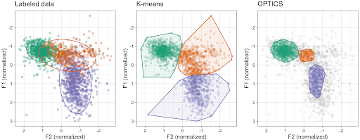

{% include header.html %}

{{page.title}} GitHub
This project systematically compares two clustering algorithms: K-means and OPTICS (similar to DBSCAN) on both theoretical and empirical levels. The project finds that K-means entails assumptions that both theoretically and empirically pose issues for meaningful interpretations of the results. OPTICS is proposed as an alternative that has potential for learning meaningful patterns in exploratory vowel space analysis.
This project was delivered at a talk at the LSA Annual Meeting in January 2023 with Jennifer Kuo, and the proceedings paper is available here.
The slides and code are available at this GitHub repository.